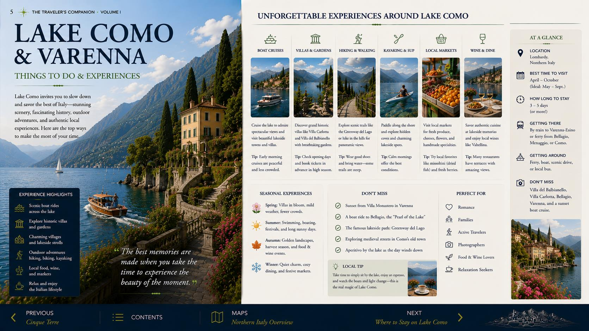
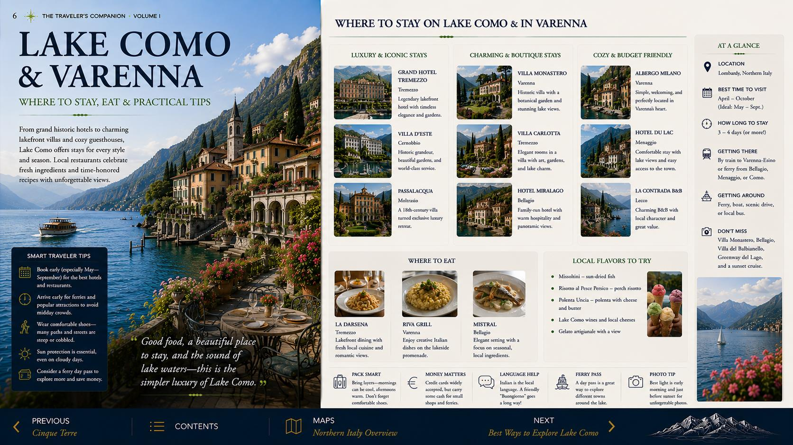
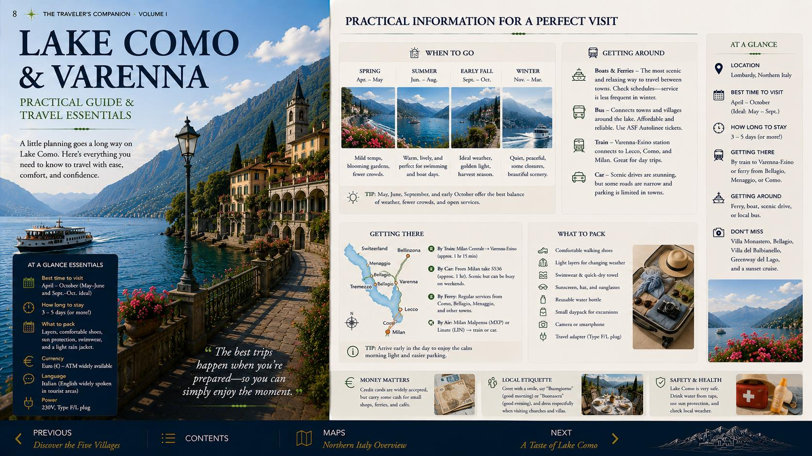
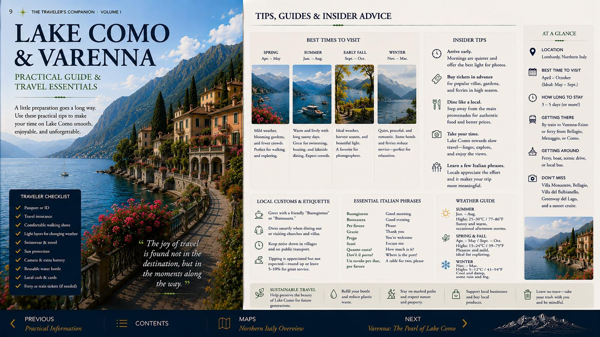
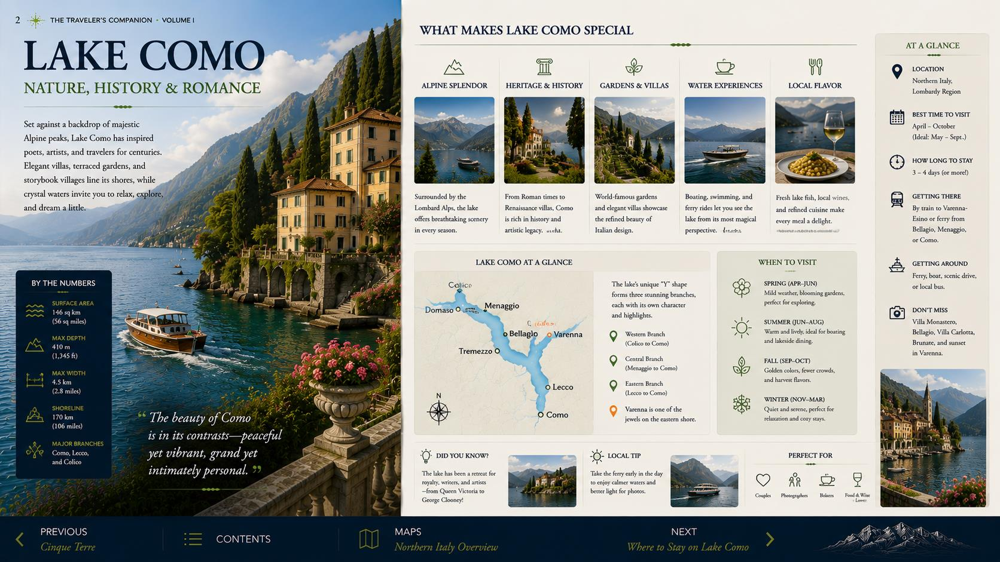
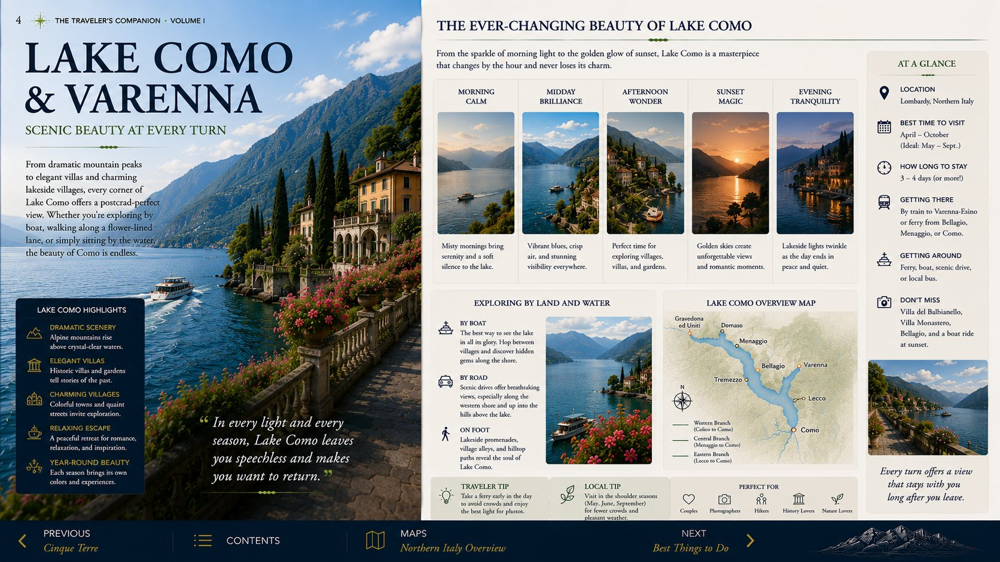
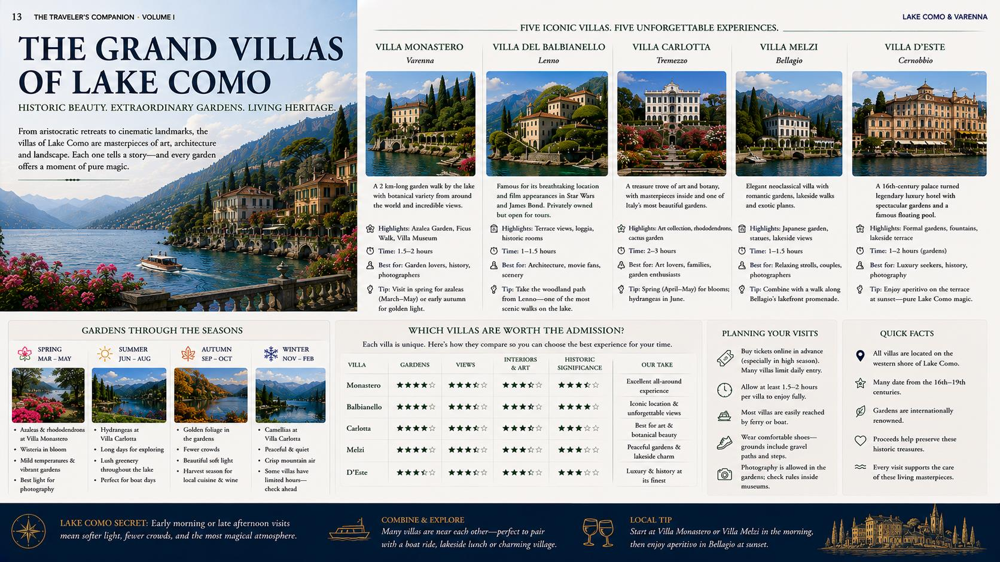
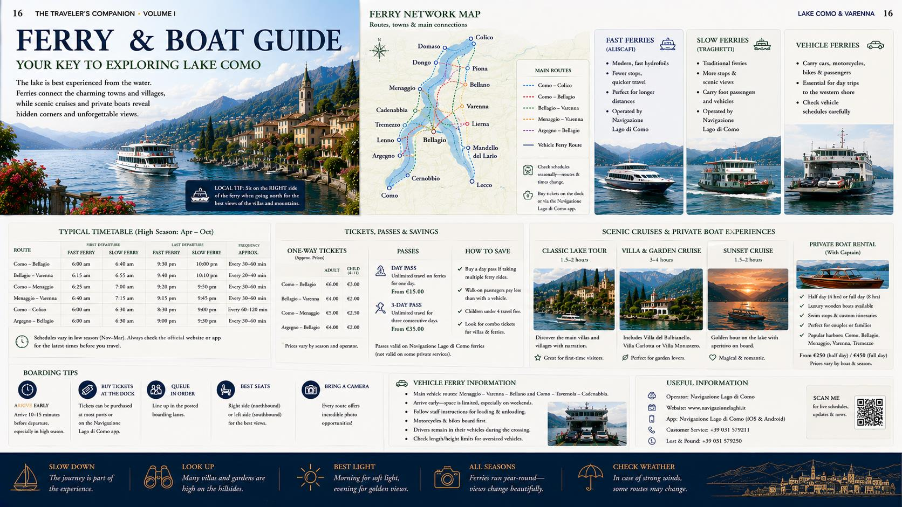
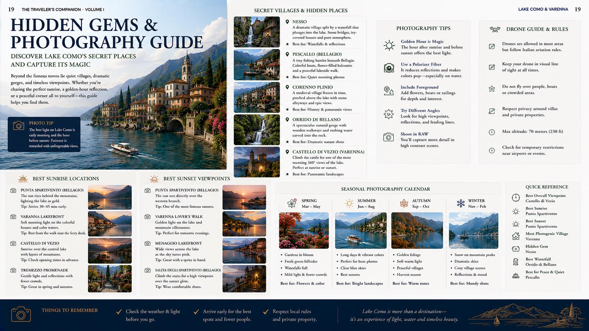

Waterfront orientation
Walk the Passeggiata degli Innamorati and old harbor while Varenna is still quiet. Check the ferry board as you pass the landing.
45 minutes · Easy
Two nights in Varenna, one beautifully paced central-lake day, and none of the usual pressure to see everything.
Tap a place to jump directly to its guide section. The blue lines show the practical passenger-ferry triangle.
Lake Como rewards selective travel. Your strongest day is not a race around the shoreline; it is a sequence of water, gardens, lunch and late light, with Varenna always functioning as the calm home base.
A realistic day that preserves atmosphere, avoids needless backtracking and gets you home before dinner.
Walk the Passeggiata degli Innamorati and old harbor while Varenna is still quiet. Check the ferry board as you pass the landing.
45 minutes · EasyGive the botanical garden and long lakefront axis the best part of the morning. Add the house museum only when it enhances rather than rushes the visit.
1½–2 hours · Priority sightTake the next practical crossing. Sit outside and treat the journey as part of the experience, not merely transportation.
Ticketed crossing · Photograph return timesMove a few streets away from the most obvious waterfront tables. Order simply, linger, and leave enough time for one meaningful walk.
Allow 75–90 minutesChoose the historic lanes and Punta Spartivento, or pair the lanes with Villa Melzi. Do not stack multiple villas.
2–2½ hours · One major add-onCross before dinner. Enjoy aperitivo and late light on your own shore without watching the clock.
Calmest finishCompact, cinematic and unusually efficient for a short stay.

Begin at the ferry landing, follow the lakeside promenade into the old center, climb only as much as you enjoy, then continue south toward Villa Monastero. This keeps the most scenic walking on a natural line.
Immediate atmosphere, minimal planning and the best first walk after arrival.
Essential · 45–60 minThe itinerary’s strongest fit: important gardens with no ferry transfer required.
Essential · 1½–2 hrRewarding views, but the climb is real. Treat it as a weather-and-energy decision.
Optional · 2–3 hr returnBellagio is best enjoyed as a graceful half-day, not a checklist.

Village version: lanes, shops, lunch and Punta Spartivento. Garden version: shorten the shopping and add Villa Melzi. Both are satisfying; combining everything usually weakens the day.
Walk uphill soon after landing, then descend toward the water later. This avoids repeatedly climbing the same stepped lanes.
Three famous villas offer three very different logistical commitments.

Long, elegant lakefront gardens in your base village. It offers the highest reward for the least logistical effort.

A substantial garden-and-art experience on the western shore. Best when it is the afternoon’s main objective.

The iconic setting is memorable, but reaching it requires more planning. Reserve it for a day built specifically around the villa.
The central-lake triangle is the practical core of this stay.
Confirm both the next useful departure and the final comfortable return before leaving the dock area.
Passenger ferries, fast services and vehicle ferries do not always share the same stops or ticket arrangements.
Aim for a return earlier than the last possible boat. Weather, queues and missed connections matter more late in the day.
For central-lake sightseeing, moving the car usually adds stress rather than freedom.
At Lake Como, the character of the meal matters as much as the address.
Best on Bellagio day. Favor a table with a genuine view, but move away from the landing before deciding.
Reserve one memorable dinner in your base. Returning before dinner avoids making the last ferry part of the meal.
Late afternoon in Varenna is the ideal pause: the day-trippers thin out and the opposite shore catches softer light.
Lake fish, risotto, polenta, local cheeses and simple northern Italian cooking rather than an overloaded tourist menu.
Small logistical decisions have an outsized effect on this lake.
Park once in Varenna and leave the car. Confirm hotel arrangements before arrival because convenient spaces are limited.
Expect cobbles, steps and steep lanes. Wear shoes that remain comfortable when damp.
Use the hotel as your luggage solution. Rolling bags through stepped lanes is unpleasant.
Carry a light layer even on warm days. Boats and shaded waterfronts can feel cooler than inland streets.
Use early Varenna for quiet detail, ferries for broad lake views and late afternoon for warm façades and layered mountains.
A complete lake circuit, several major villas and three towns in one day. The lake looks compact on a map but moves slowly.
Tap any image to enlarge it.





